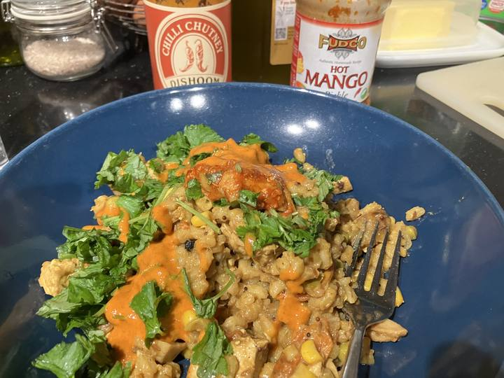

Barleyani
03.01.24
Barley makes a great biryani. 1 cup barley to 2 cups water. Pressure cook 20mins.

Soak
1 cup barley
3 cups water
1/2 tsp turmeric
Pinch salt
Main
2 tbl oil
1 onion chopped
1 tsp mustard seeds
10 Curry leaves
1 tsp cumin seeds
1 bay leaf (fresh)
2 green chilli
200g firm tofu
3cm ginger+2 garlic paste
10 cherry tomatoes chopped
1/2 tsp turmeric
2 tsp veg biryani masala
1 tbl ground cumin
1/2 cup yogurt
Salt (1 tsp)
2 cups water
Finish
Fresh coriander
Hot mango pickle
Yogurt
1 cup barley soaked for 1 hour with 1/2 tspn turmeric and pinch salt
Fry things (onion, garlic-ginger paste etc). Add protein (tofu, prawn). Fry 2 mins. Add dry whole spice. Add chopped chili. Add tomatoes. Fry. Add drained barley. Add 1/2 cup yogurt.
Add spice - 2tspn veg biryani masala, 1/2 tspn turmeric, 1 tbl cumin…
Two cups water.
Lid.
Pressure.
20 min on low.
Serve with fresh coriander, pickle, yogurt
The time: pressure cooking makes barley possible.
The spice: veg biryani masala is essential here
I grew up near a village called Berrick Salome…. I live now across the Firth of Firth from North Berwick. Berlin was my home for three years. The Ber has always been close. Ber being barley in old english… berwick/berrick being a barley farm. Not sure about the naming of Berlin… but so much Barley grows wild in the streets.
We cook so little with it now, i wanted to understand more about it. Its texture reminds me of more interesting wholemeal short grain rice ive had in bangalore and kerela with babitha. Making a biryani from it feels very natural.